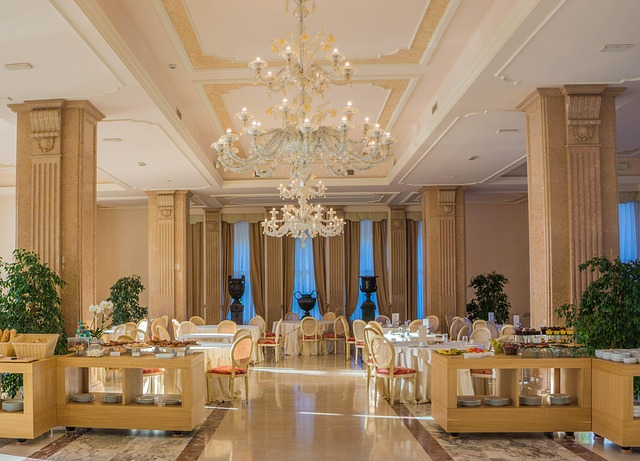
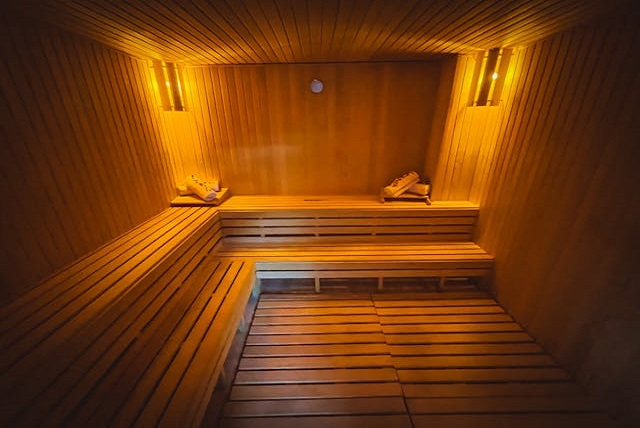
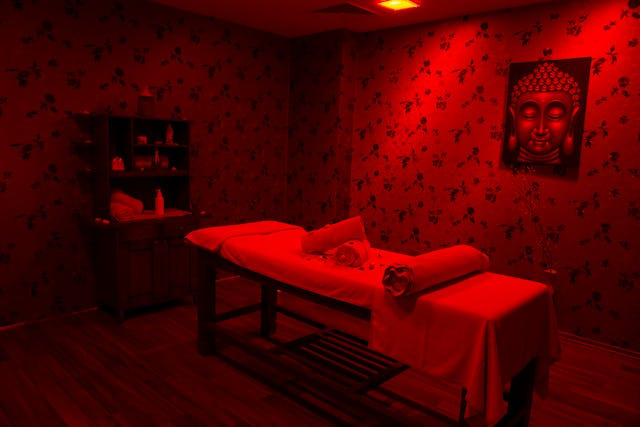
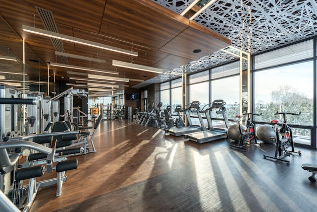
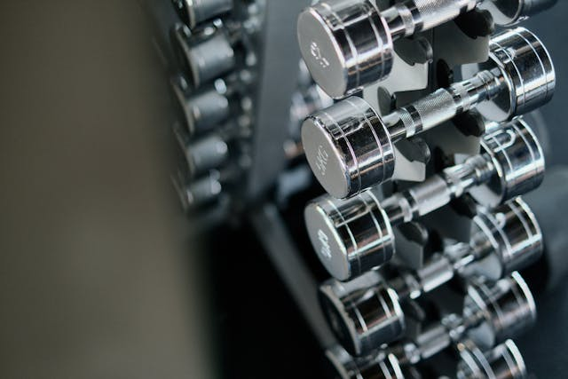
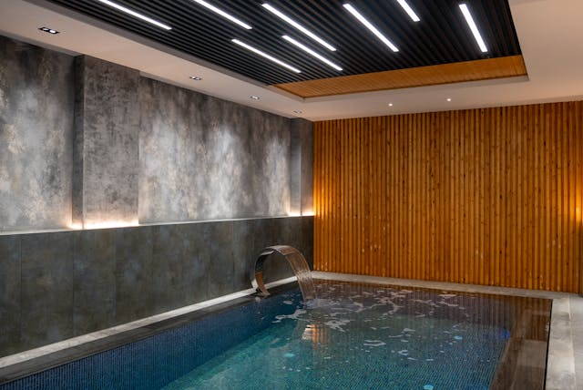
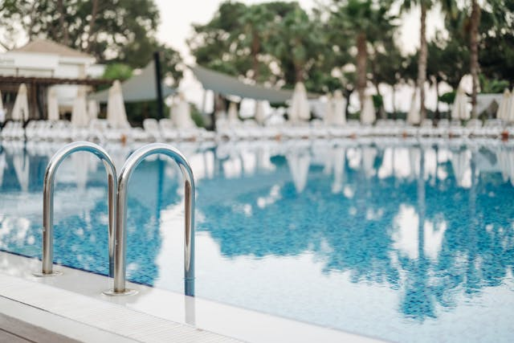

Szolgáltatások
Fedezze fel a Royal Castle Hotel által kínált exkluzív szolgáltatásokat, amelyek garantálják a felejthetetlen tartózkodást.
Kényelmes szobáink mellett számos szolgáltatást kínálunk, hogy minden vendégünk igényeit kielégítsük. Legyen szó egy romantikus vacsoráról az éttermünkben, egy pihentető masszázsról a spa részlegünkben, vagy egy energizáló edzésről a fitneszközpontunkban, nálunk mindenki megtalálja a számára legmegfelelőbb élményt.
Étterem

Kóstolja meg a helyi és nemzetközi konyha ízeit elegáns környezetben.
Nyitvatartás: 12:00 - 22:00
Éttermünk friss, minőségi alapanyagokból készült ételekkel várja vendégeit minden nap. Barátságos légkörrel és figyelmes kiszolgálással tesszük különlegessé az itt töltött időt. Séfünk gondosan összeállított menüvel és szezonális ajánlatokkal készül. Éttermünk ideális hely családi ebédekhez, baráti találkozókhoz és üzleti vacsorákhoz is. Kényelmes belső térrel és hangulatos terasszal várjuk vendégeinket. Látogasson el hozzánk, és tapasztalja meg a minőség és vendégszeretet tökéletes harmóniáját!
Asztalfoglalás: +36 1 876 5432
Spa és wellness

Relaxáljon a szaunában, élvezze a masszázsokat és a szépségápolási kezeléseket.
Nyitvatartás: 10:00 - 20:00

Szauna és masszázs részlegünk a teljes kikapcsolódás és feltöltődés helyszíne. Modern szaunáink segítenek a stressz oldásában és a test méregtelenítésében. Szakképzett masszőreink különböző kezelésekkel gondoskodnak a testi-lelki harmóniáról. Nyugodt, igényes környezetben biztosítjuk vendégeink számára a pihenés élményét. Látogasson el hozzánk, és tapasztalja meg a valódi wellness élményt!
Fitneszközpont

Tartsa formában magát modern felszerelésekkel és személyi edző szolgáltatással.
Nyitvatartás: 06:00 - 22:00

Fitneszközpontunkban a legmodernebb kardio- és erősítőgépek állnak rendelkezésére, hogy vendégeink minden edzésigényét kielégítsük. Személyi edzőink segítenek egyéni edzésterv kialakításában, hogy hatékonyan érhesse el fitneszcéljait. Kényelmes és inspiráló környezetben várjuk, hogy energizáló edzésekkel töltse meg napjait nálunk!
Medence

Merüljön el a fedett medencénkben, és élvezze a nyugodt környezetet.
Nyitvatartás: 08:00 - 20:00

Fedett medencénk egész évben elérhető, így bármikor élvezheti a víz nyújtotta frissítő élményt. A medence körül kényelmes napozóágyak és pihenőhelyek állnak rendelkezésére, hogy teljesen kikapcsolódhasson. Víz alatti világításunk és hangrendszerünk különleges atmoszférát teremt, így a medence használata nem csak felfrissülést, hanem egyedi élményt is nyújt vendégeink számára.